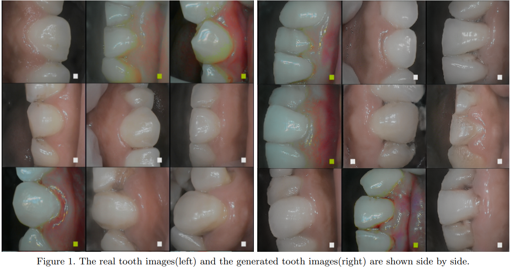
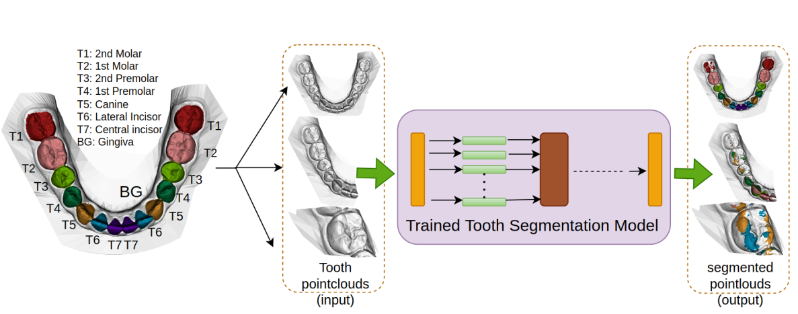
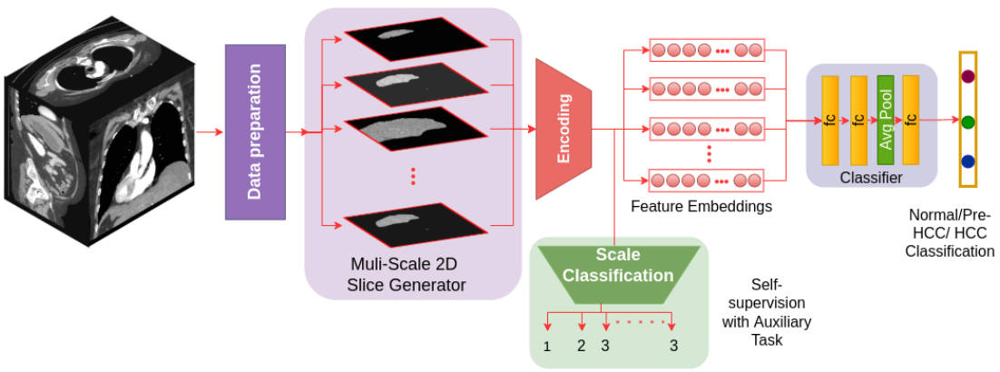
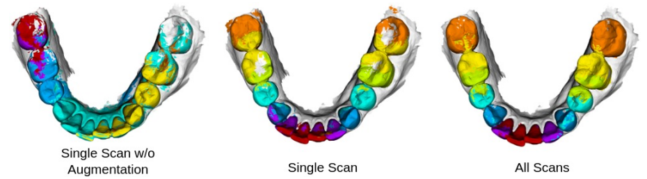
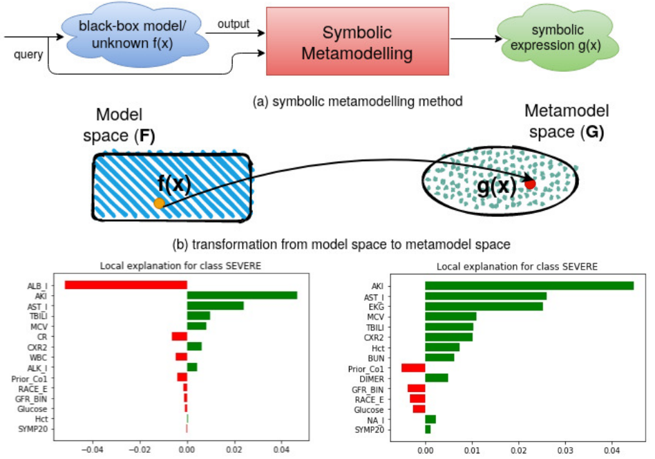
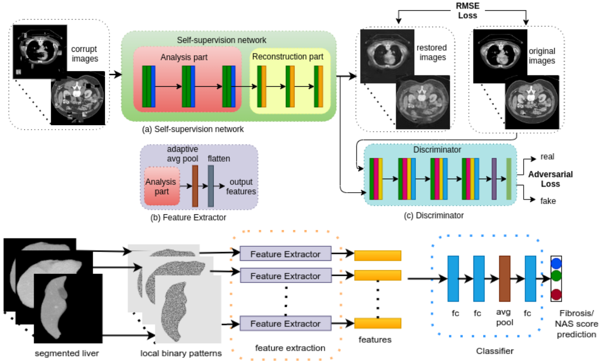
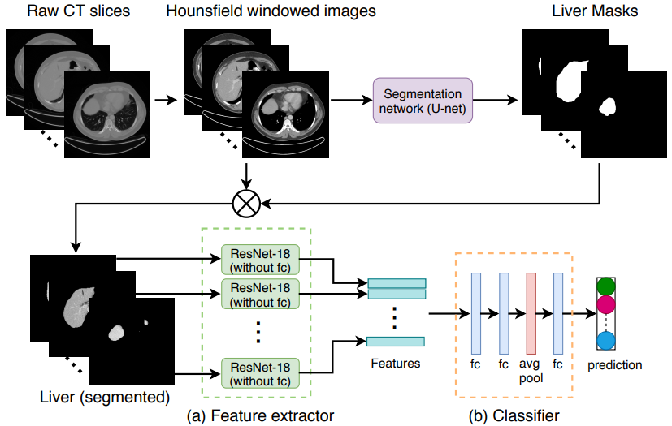
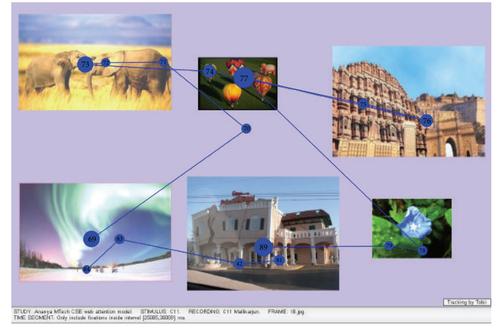

Research
|  |
Development and evaluation of a deep learning model for oral soft and hard tissue diagnosis using synthetic image data generated by StyleGAN
Ananya Jana, Vrinda Jain, Abmael H. Oliveira, Hrebesh M. Subhash, Dimitris N. Metaxas Computational Optical Imaging and Artificial Intelligence in Biomedical Sciences (SPIE BiOS), 2024
[Paper]
[Bibtex]
@inproceedings{jana2024development,
title={Development and evaluation of a deep learning model for oral soft and hard tissue diagnosis using synthetic image data generated by StyleGAN},
author={Jana, Ananya and Jain, Vrinda and Oliveira, Abmael and Subhash, Hrebesh Molly and Metaxas, Dimitris},
booktitle={Computational Optical Imaging and Artificial Intelligence in Biomedical Sciences},
volume={12857},
pages={60--65},
year={2024},
organization={SPIE}
}
|
|  |
A Critical Analysis of the Limitation of Deep Learning based 3D Dental Mesh Segmentation Methods in Segmenting Partial Scans
Ananya Jana, Aniruddha Maiti, Dimitris N. Metaxas 45th Annual International Conference of the IEEE Engineering in Medicine & Biology Society (EMBC), 2023
[Paper]
[Code]
[Bibtex]
@inproceedings{jana2023critical,
title={A Critical Analysis of the Limitation of Deep Learning based 3D Dental Mesh Segmentation Methods in Segmenting Partial Scans},
author={Jana, Ananya and Maiti, Aniruddha and Metaxas, Dimitris N},
booktitle={2023 45th Annual International Conference of the IEEE Engineering in Medicine \& Biology Society (EMBC)},
pages={1--7},
year={2023},
organization={IEEE}
}
|

|
3D Tooth Mesh Segmentation with Simplified Mesh Cell Representation
Ananya Jana, Hrebesh M. Subhash, Dimitris N. Metaxas IEEE 20th International Symposium on Biomedical Imaging (ISBI), 2023 (oral)
[Paper]
[Code]
[Bibtex]
@inproceedings{jana20233d,
title={3d tooth mesh segmentation with simplified mesh cell representation},
author={Jana, Ananya and Subhash, Hrebesh Molly and Metaxas, Dimitris},
booktitle={2023 IEEE 20th International Symposium on Biomedical Imaging (ISBI)},
pages={1--5},
year={2023},
organization={IEEE}
}
|
|  |
Scale-Aware Multi-Instance Learning for Early Prognosis of Subjects at Risk of Developing Hepatocellular Carcinoma
Ananya Jana, Ramanathan Arunachalam, Carlos D. Minacapelli, Kaitlyn Catalano, Carlos Catalano, Dimitris N. Metaxas IEEE 20th International Symposium on Biomedical Imaging (ISBI), 2023
[Paper]
[Code]
[Bibtex]
@inproceedings{jana2023scale,
title={Scale-Aware Multi-Instance Learning for Early Prognosis of Subjects at Risk of Developing Hepatocellular Carcinoma},
author={Jana, Ananya and Arunachalam, Ramanathan and Minacapelli, Carlos D and Catalano, Kaitlyn and Catalano, Carlos and Rustgi, Vinod and Metaxas, Dimitris},
booktitle={2023 IEEE 20th International Symposium on Biomedical Imaging (ISBI)},
pages={1--5},
year={2023},
organization={IEEE}
}
|
|  |
Automatic tooth segmentation from 3D dental model using deep learning: a quantitative analysis of what can be learnt from a single 3D dental model
Ananya Jana,Hrebesh M. Subhash, Dimitris N. Metaxas 18th International Symposium on Medical Information Processing and Analysis (SIPAIM), 2022, (oral)
[Paper]
[Code]
[Bibtex]
@inproceedings{jana2023automatic,
title={Automatic tooth segmentation from 3d dental model using deep learning: a quantitative analysis of what can be learnt from a single 3d dental model},
author={Jana, Ananya and Subhash, Hrebesh Molly and Metaxas, Dimitris},
booktitle={18th International Symposium on Medical Information Processing and Analysis},
volume={12567},
pages={42--51},
year={2023},
organization={SPIE}
}
|
|  |
Global and local interpretation of black-box machine learning models to determine prognostic factors from early COVID-19 data
Ananya Jana,Carlos D. Minacapelli, Vinod Rustgi, Dimitris N. Metaxas 17th International Symposium on Medical Information Processing and Analysis (SIPAIM 2021) (oral)
[Paper]
[Code]
[Bibtex]
@inproceedings{jana2021global,
title={Global and local interpretation of black-box machine learning models to determine prognostic factors from early COVID-19 data},
author={Jana, Ananya and Minacapelli, Carlos D and Rustgi, Vinod and Metaxas, Dimitris},
booktitle={17th International Symposium on Medical Information Processing and Analysis},
volume={12088},
pages={75--84},
year={2021},
organization={SPIE}
}
|
|  |
Liver Fibrosis And NAS Scoring From CT Images Using Self-Supervised Learning And Texture Encoding
Ananya Jana, Hui Qu, Carlos D. Minacapelli, Carolyn Catalano, Vinod Rustgi, Dimitris N. Metaxas IEEE 18th International Symposium on Biomedical Imaging (ISBI), 2021 (oral)
[Paper]
[Code]
[Bibtex]
@inproceedings{jana2021liver,
title={Liver fibrosis and nas scoring from ct images using self-supervised learning and texture encoding},
author={Jana, Ananya and Qu, Hui and Minacapelli, Carlos D and Catalano, Carolyn and Rustgi, Vinod and Metaxas, Dimitris},
booktitle={2021 IEEE 18th International Symposium on Biomedical Imaging (ISBI)},
pages={1553--1557},
year={2021},
organization={IEEE}
}
|
|  |
Deep Learning based NAS Score and Fibrosis Stage Prediction from CT and Pathology Data
Ananya Jana, Hui Qu, Puru Rattan, Carlos D. Minacapelli, Vinod Rustgi, Dimitris N. Metaxas IEEE International Conference on Bioinformatics and Bioengineering (BIBE), 2020 (oral)
[Paper]
[Code]
[Bibtex]
@inproceedings{jana2020deep,
title={Deep learning based NAS Score and fibrosis stage prediction from CT and pathology data},
author={Jana, Ananya and Qu, Hui and Rattan, Puru and Minacapelli, Carlos D and Rustgi, Vinod and Metaxas, Dimitris},
booktitle={2020 IEEE 20th International Conference on Bioinformatics and Bioengineering (BIBE)},
pages={981--986},
year={2020},
organization={IEEE}
}
|
|  |
Design and Validation of an Attention Model of Web Page Users
Ananya Jana, Samit Bhattacharya Advances in Human Computer Interaction, 2015
[Paper]
[Bibtex]
@article{jana2015design,
title={Design and validation of an attention model of web page users},
author={Jana, Ananya and Bhattacharya, Samit},
journal={Advances in Human-Computer Interaction},
volume={2015},
number={1},
pages={373419},
year={2015},
publisher={Wiley Online Library}
url={https://onlinelibrary.wiley.com/doi/full/10.1155/2015/373419}
}
|